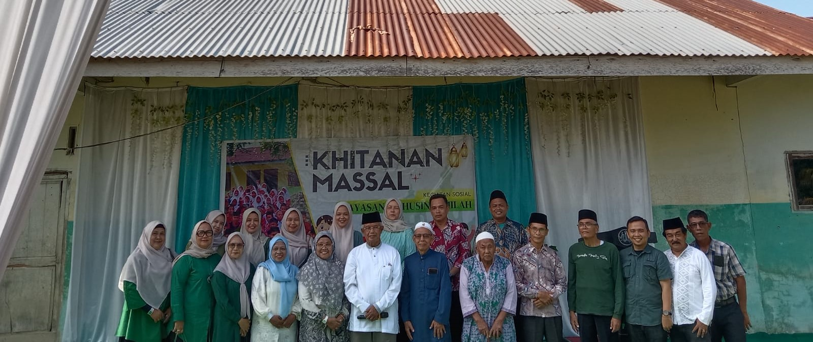
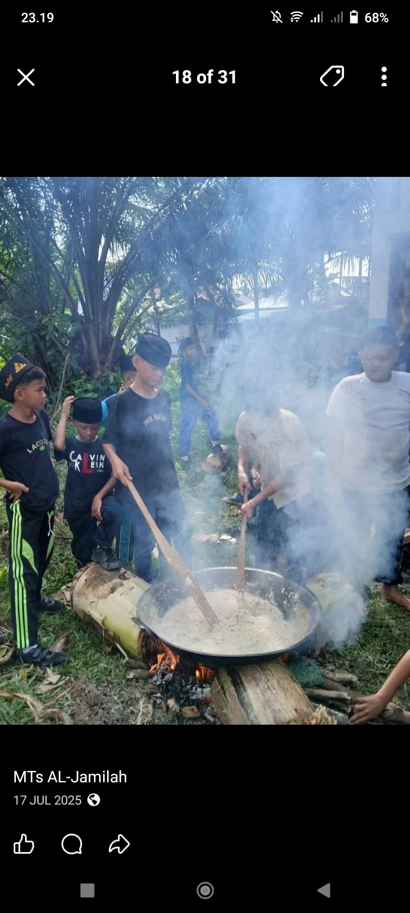
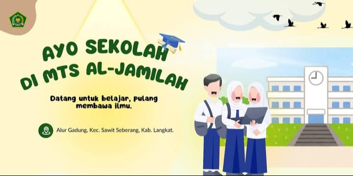

Informasi terbaru mengenai kegiatan, prestasi, dan pengumuman sekolah

Kegiatan berlangsung dengan lancar dan diikuti oleh masyarakat sekitar, serta mendapat dukungan dari berbagai pihak.
Baca Selengkapnya
Kegiatan berlangsung dengan lancar dan sangat menyenangkan. Dengan membuat bubur asyura bersama-sama.
Baca Selengkapnya
Halo Sobat Pendidikan! Bersiaplah, pendaftaran Sistem Penerimaan Murid Baru(SPMB) Tahun Ajaran 2026/2027 telah resmi dibuka.
Baca Selengkapnya